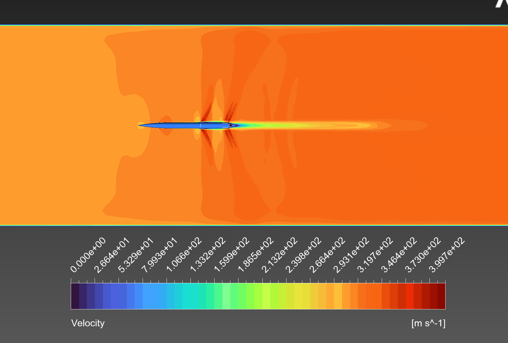

SpaceLex Active Airbrakes
Active aerodynamic braking system designed to hold a 10,000 ft IREC competition rocket on target apogee through real-time ESP32 control and prior simulation data

1. Objective and Requirements
The main objective of the airbrakes system is to address a common problem with high power rocket motors, being motor tolerance. Due to the variance of appoximately ±10%, an apogee control system is necessary to target the specific 10,000ft apogee for maximum points scored. This is done by actuating control surfaces during the coasting phase which will use an increase in drag to reduce our velocity and achieve a specific apogee
- Drag Addition: Achieving up to a 28% increase in overall rocket drag at full deployment
- Physical Constraints: Fit within a 4 lb subsystem weight allowance inside the rocket
- Real-Time Control: Predict apogee in real time to command specific drag increases post-burnout
2. Mechanical Design and CFD Workflow
The airbrake assembly was modeled in Autodesk Inventor to deploy symmetrically into the freestream perpendicular to the rocket body. To quantify the effectiveness of the airbrakes, I designed and established a team-standard Ansys Fluent CFD workflow spanning Mach 0.1–0.8 across four deployment angles.
The resulting drag coefficient lookup tables will feed directly into our prediction and control algorithm


3. Control Design and Validation
Using Simulink and C++, we developed a real-time PID control loop running on an ESP32 microcontroller. The controller fuses live IMU and barometer telemetry to estimate projected apogee and command airbrake deployment angles throughout the coast phase.
Subscale prototype launches are used to validate sensor filtering, mechanical reliability, and real-world drag performance against CFD predictions.